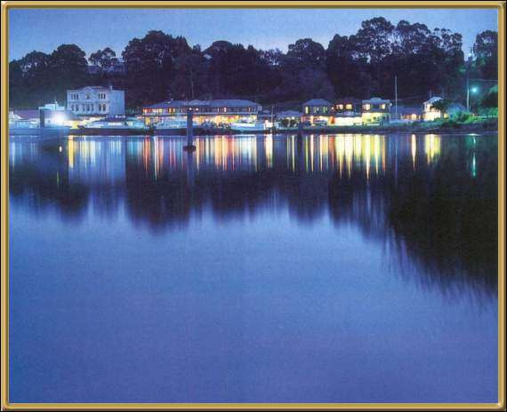

Strahan overlooks Macquarie Harbour. It is a quiet town and serves as a good starting place for exploring the Gordon River, as well as other areas of the West Coast of Tasmania. It's worth taking the time to see the old Post and Telegraph Office and the Union Steamship Company Building.
Photographer: Unknown